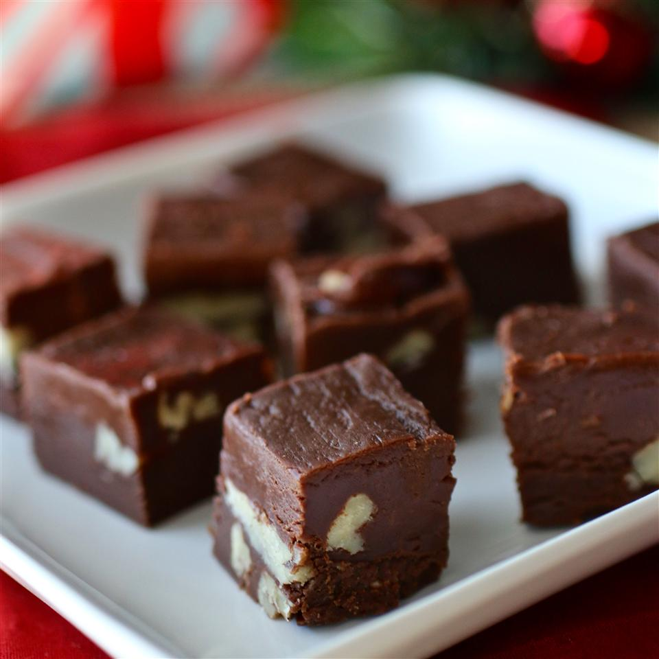

Chocalate Fudge

Although the most popular flavor of fudge is chocolate fudge, and the word
fudge itself is often (albeit erroneously) used as a synonym for the word
chocolate. Fudge is not necessarily chocolate.
Ingredients
- 1 (7 ounce) jar marshmallow creme
- 1 1/2 cups white sugar
- 2/3 cup evaporated milk
- 1/4 cup butter
- 1/4 teaspoon salt
- 2 cups milk chocolate chips
- 1 cup semisweet chocolate chips
- 1/2 cup chopped nuts
- 1 teaspoon vanilla extract
Directions
- Line an 8x8 inch pan with aluminum foil. Set aside
- In a large saucepan over medium heat, combine marshmallow cream,
sugar, evaporated milk, butter and salt. Bring to a full boil, and cook
for 5 minutes, stirring constantly.
- Remove from heat and pour in semisweet chocolate chips and milk
chocolate chips. Stir until chocolate is melted and misture is smooth.
Stir in nuts and vanilla. Pour into prepared pan. Chill in refigerator
for 2 hours, or until firm.
Nutrition Facts
Per Serving: 124 calories; protein 1.4g; carbohydrates 18.2; fat 5.5g;
cholestral 5.1mg; sodium 26.1mg.